Laravel UI, Bootstrap, & Templating
Praktikum ini membahas pengembangan aplikasi web berbasis Laravel dengan studi kasus Sistem Informasi Sekolah. Topik utama dalam praktikum ini meliputi penggunaan Laravel UI, integrasi Bootstrap sebagai framework CSS, serta penerapan Templating dan Layouting menggunakan Blade Template Engine.
Mampu menggunakan package laravel/ui untuk membuat sistem autentikasi seperti login,
register, dan reset password tanpa perlu membuatnya dari nol.
Mampu mengintegrasikan template SB Admin 2 berbasis Bootstrap ke dalam project Laravel untuk menghasilkan tampilan dashboard yang terstruktur.
Mampu membangun layout global menggunakan blade templating dengan direktif @yield, @extends,
@section, dan @include untuk menjaga konssitensi tampilan antar halaman.
Mampu membuat fitur Create, Read, Update, Delete (CRUD) untuk entitas pengguna menggunakan Resource Controller di Laravel.
Buat project Laravel deengan mengetikkan perintah berikut pada terminal: composer create-project
laravel/laravel laravel-sisfo.
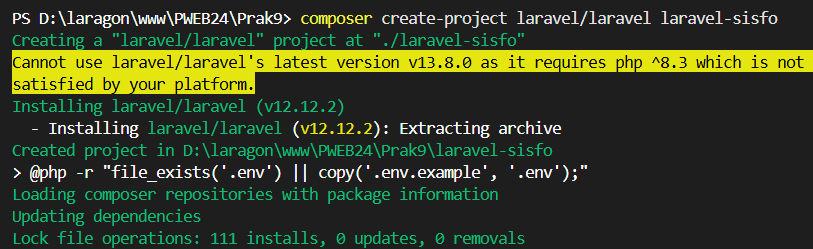
Buka file .env pada project, lalu sesuaikan konfigurasi database seperti berikut:
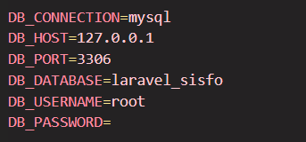
User authentication pada studi kasus ini menggunakan fitur authentication bawaan dari laravel melalui package laravel/ui.
laravel/uiBuka terminal cmd kemudian ketikkan perintah berikut: composer require laravel/ui. Jika berhasil, maka akan
muncul tampilan seperti gambar berikut.
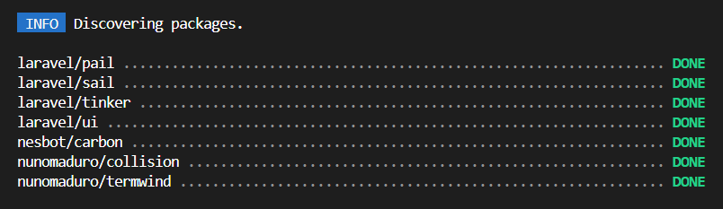
Jalankan perintah berikut untuk membuat fitur autentikasi secara otomatis menggunakan bootstrap: php artisan ui bootstrap
--auth. Jika berhasil, maka akan muncul tampilan seperti berikut.
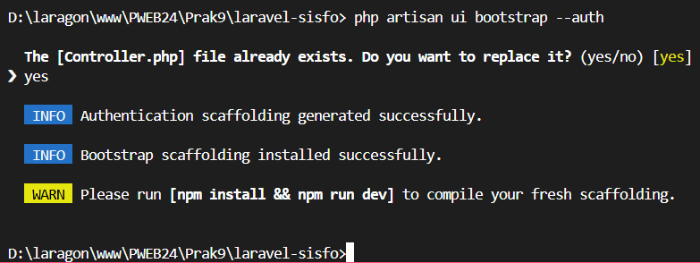
Ketikkan perintah npm install && npm run dev untuk menginstall dan compile file-file asset bawaan, sehingga file-file
yang dibutuhkan untuk authentication akan di-generate secara otomatis seperti halaman login, register, dan forgot password.
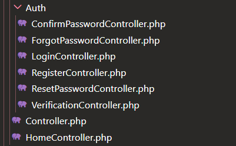
Selain controller, juga terdapat view untuk authentication seperti berikut.
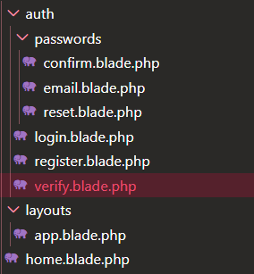
Ketikkan perintah php artisan migrate untuk membuat migration table authentication. Jika berhasil, maka aplikasi sisfo
sudah memiliki fitur authentication bawaan dari Laravel. Lakukan percobaan registrasi dan login, jika berhasil maka akan tampil
seperti gambar berikut.
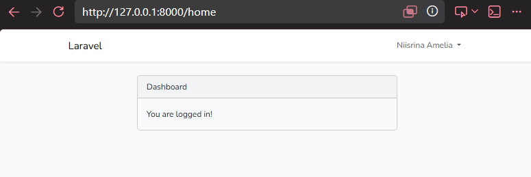
Table users yang di-generate Laravel secara default hanya memiliki kolom id, name, email, password,
dan beberapa kolom timestamp. Dari struktur tersebut, kita perlu menambahkan beberapa field yaitu username, level, dan status.
Buat migration untuk menambahkan field di atas dengan mengetikkan perintah berikut: php artisan make:migration costum_table_users. Selanjutnya, buka folder
database/migration seperti gambar berikut.
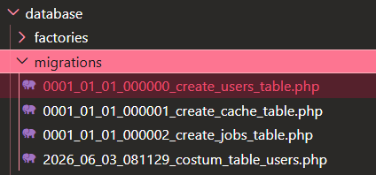
Buka file migration dengan nama custom_table_users.php lalu isikan dengan kode berikut.
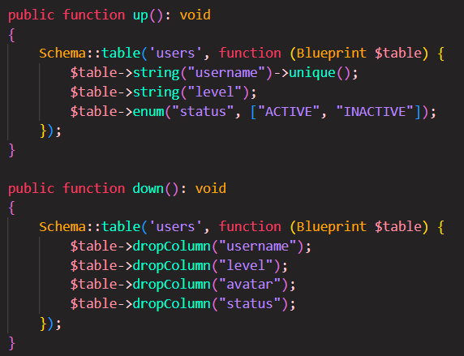
Jalankan migration di file tersebut dengan mengetikkan perintah berikut: php artisan migrate. Setelah berhasil, maka struktur tabel
users akan memiliki 11 kolom, termasuk penambahan username, level, dan status.
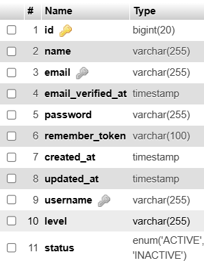
Setelah selesai mengatur tabel, kita perlu menambah user dengan menggunakan fitur seeding pada Laravel.
Buat seeding untuk menambahkan user admin mengetikkan perintah berikut: php artisan make:seeder AdminSeeder. Selanjutnya, buka folder
database/Seeder. Buka file AdminSeeder.php, lalu isi dengan kode program berikut.
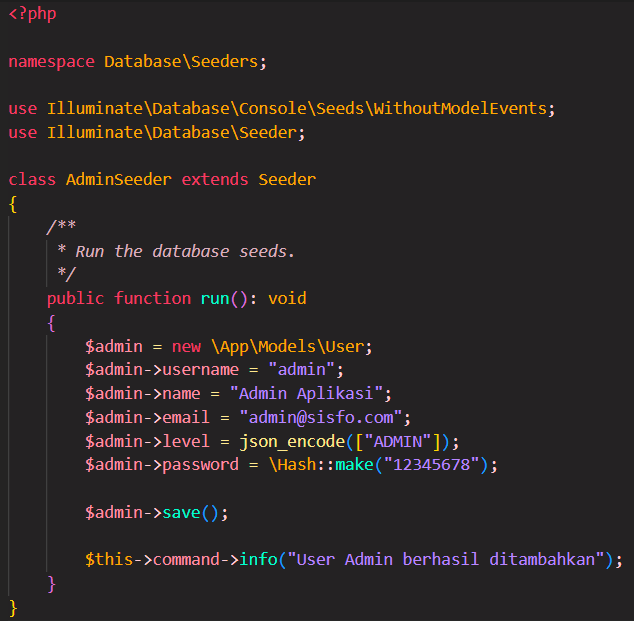
Jalankan seeding dengan perintah berikut: php artisan db:seed --class=AdminSeeder. Jika berhasil, user dapat login ke aplikasi menggunakan
akun tersebut.
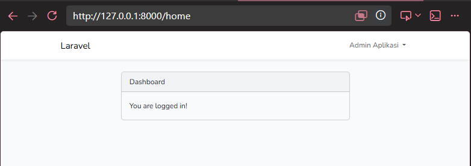
Tampilan aplikasi dikonfigurasi menggunakan template SB Admin 2 berbasis Bootstrap 4. Download template dari
https://startbootstrap.com/theme/sb-admin-2 kemudian ekstrak. Selanjutnya, copy semua asset template ke dalam folder public/sbadmin.
Buka file app.blade.php pada folder view/layouts lalu tambahkan kode berikut.
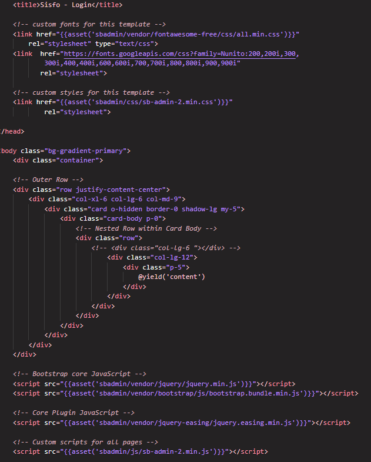
Buka halaman login maka akan muncul tampilan seperti berikut.
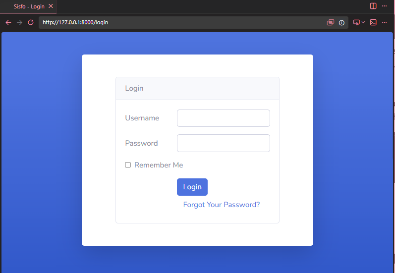
Buat file baru views/layouts/main.blade.php sebagai layout utama aplikasi. Isi file tersebut dengan kode berikut.
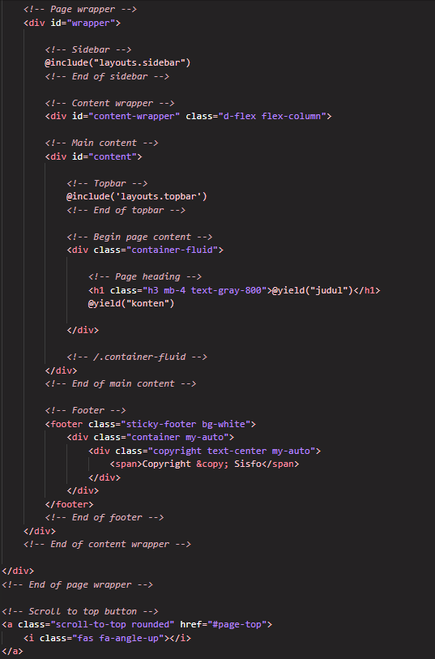
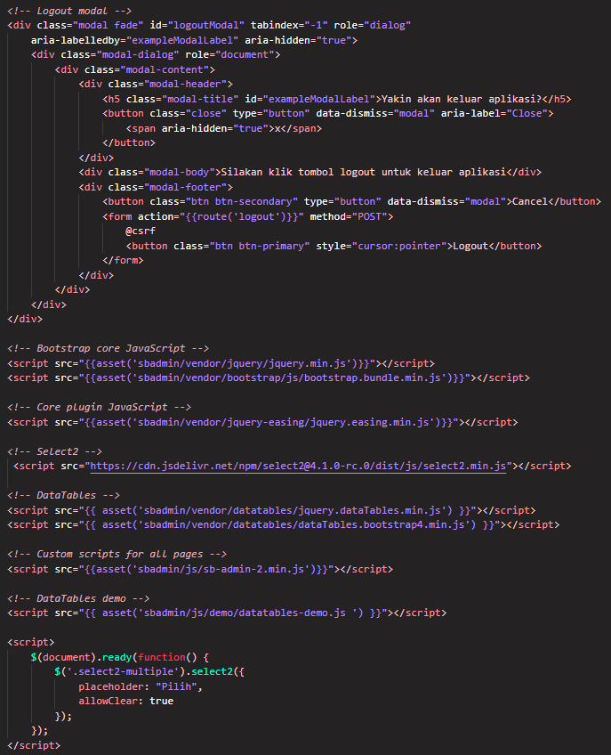
@include: menyertakan view lain ke dalam layout.@yield('nama'): mendefinisikan slot yang akan diisi oleh halaman child.@extends('layouts.main'): digunakan oleh halaman child untuk mewarisi layout main.@section('nama')- @endsection: mengisi slot yang didefinisikan @yield.
Buat file views/layouts/sidebar.blade.php yang berisi navigasi sidebar dengan menu Dashboard dan Users. Isi file dengan
kode berikut.
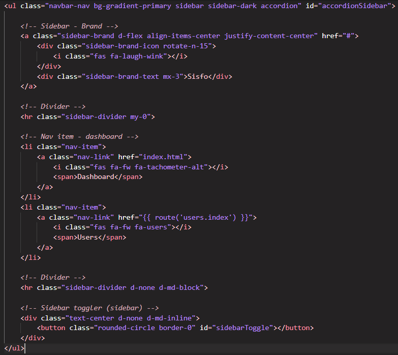
Buat file views/layouts/topbar.blade.php yang memuat nama user yang sedang login dan tombol logout dengan modal konfirmasi. Isi file
dengan kode berikut.
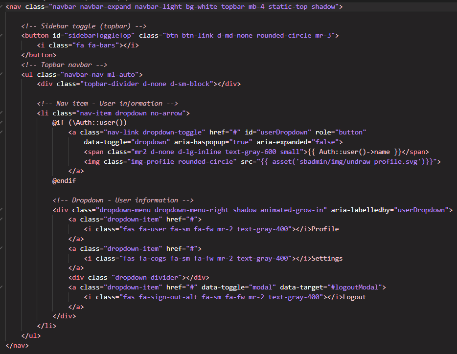
Buka file views/home.blade.php lalu isikan dengan kode program berikut.
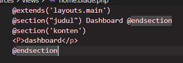
Jika konfigurasi berhasil, maka tampilan halaman dashboard akan muncul seperti berikut.
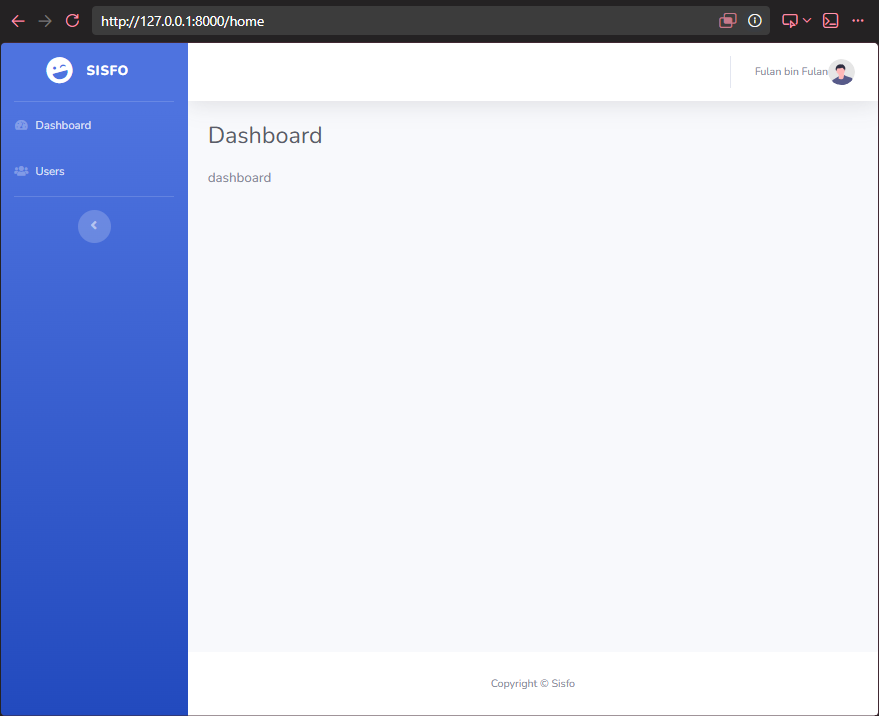
Fitur manajemen pengguna dibuat menggunakan Resource Controller yang secara otomatis mengatur operasi CRUD ke dalam method yang sudah terstruktur di Laravel.
Jalankan perintah php artisan make:controller UserController --resource lalu tambahkan route resource pada routes/web.php
seperti berikut.
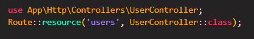
Selanjutnya, lihat pemetaan route php artisan route:list seperti berikut.
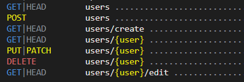
Isi action create() untuk menampilkan form, dan store() untuk menyimpan data seperti berikut.
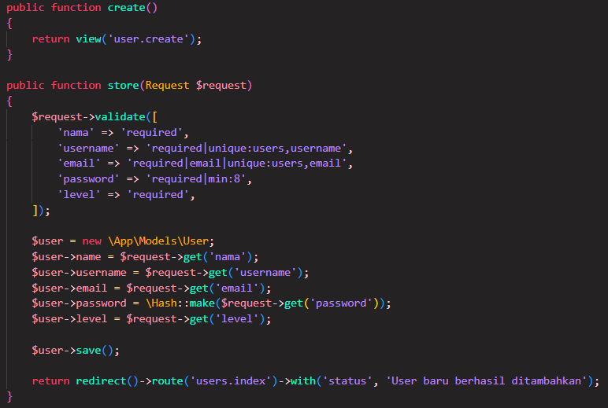
Buat folder user di dalam view, lalu tambahkian file create.blade.php. Isikan dengan kode berikut.
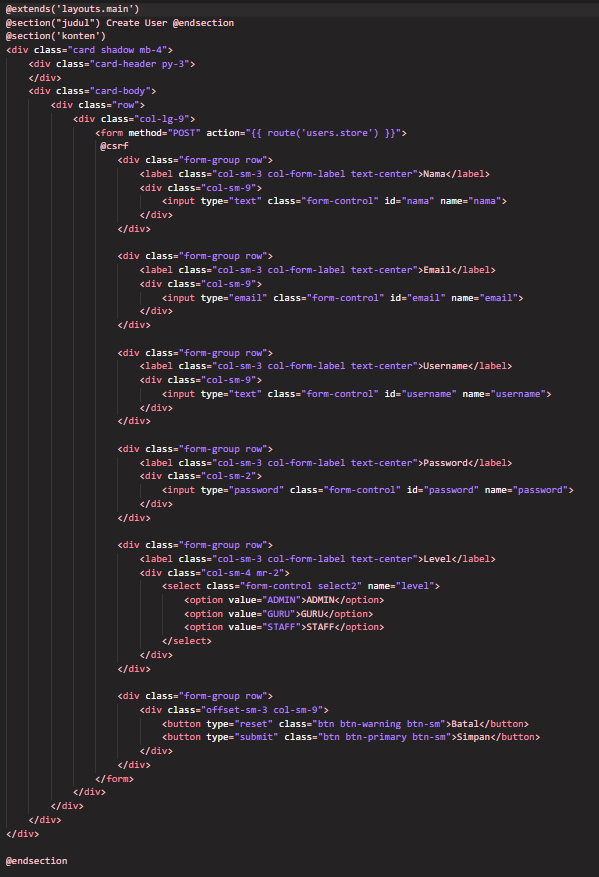
Buka halaman /users/create, jika konfigurasi berhasil maka akan muncul tampilan seperti berikut.
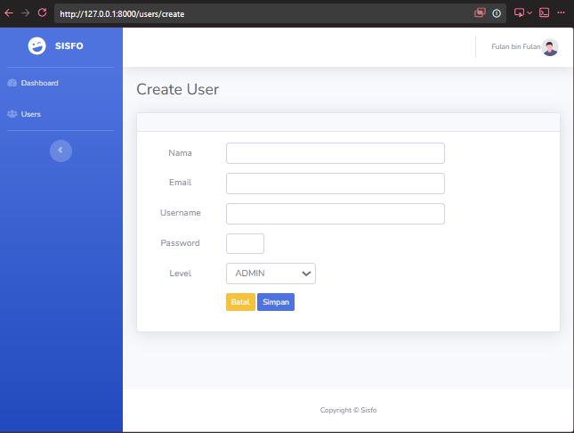
Buka action index() pada UserController, lalu tambahkan kode berikut.
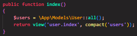
Buat file dengan nama index.blade.php lalu isi dengan kode berikut.
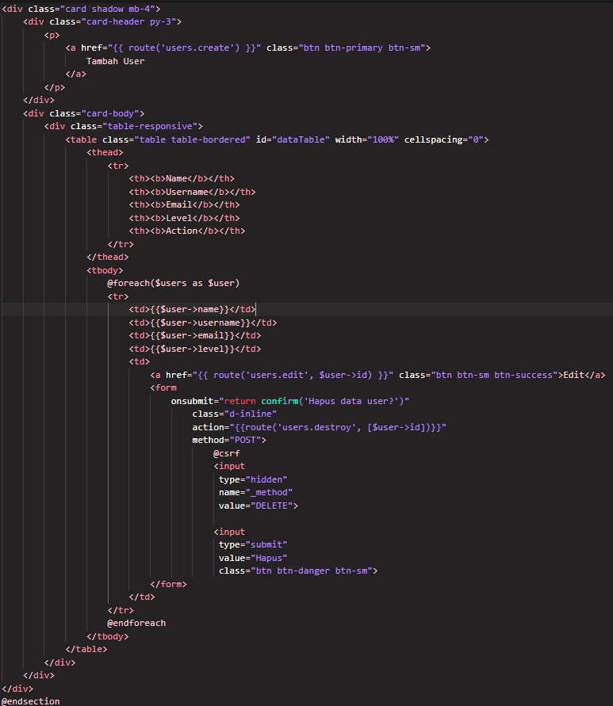
Buka halaman /users maka akan muncul tampilan list user seperti berikut.
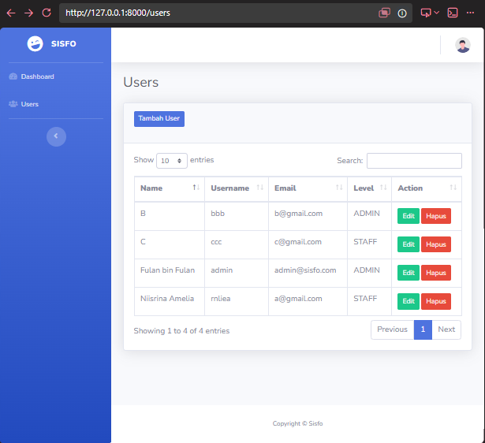
Buka action edit() dan update lalu isi dengan kode berikut.
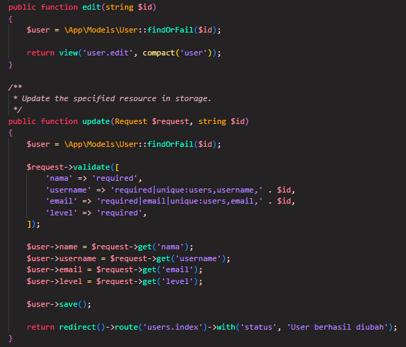
Buat file dengan nama edit.blade.php lalu isikan dengan kode berikut.
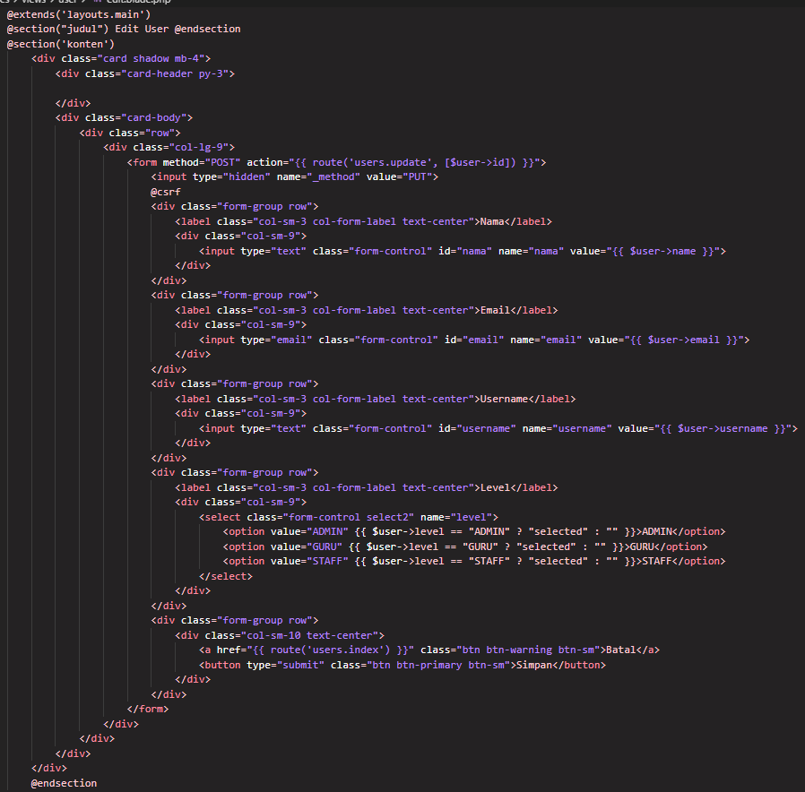
Buka halaman users/(id)/edit, maka akan muncul tampilan seperti berikut.
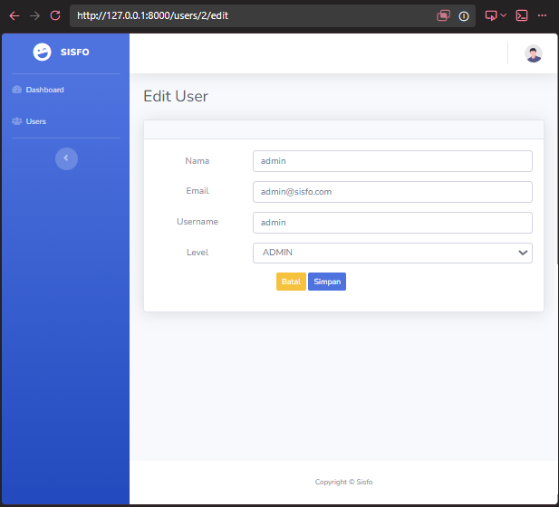
Buka action destroy() pada UserController lalu tambahkan kode program berikut.
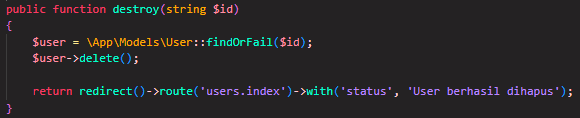
Jika tombol hapus diklik, maka akan muncul pop-up dialog peringatan seperti berikut ini.
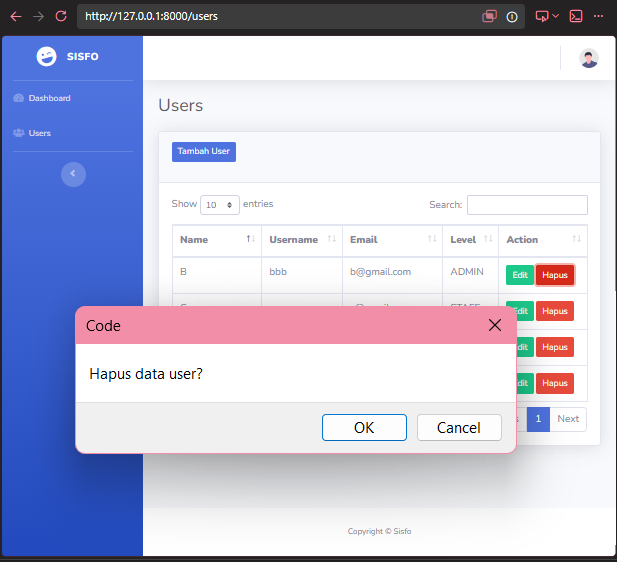
Jika tombol OK ditekan, maka data akan terhapus dan muncul pesan berhasil seperti berikut.
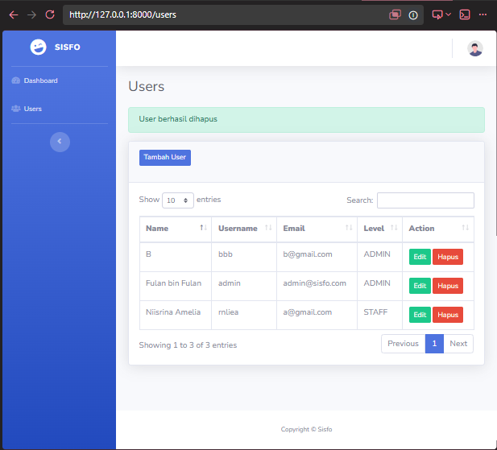
Pada sidebar.blade.php, tambahkan kode program berikut.
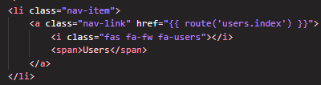
Maka, pada aplikasi akan muncul menu users seperti berikut.
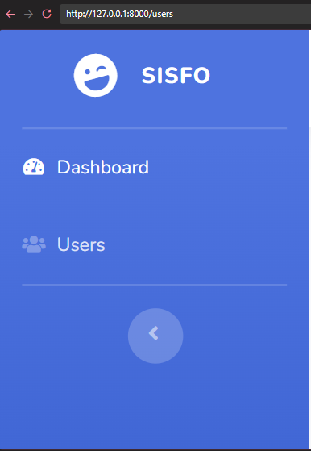
Dari praktikum yang telah dilakukan, telah dipelajari cara membangun aplikasi Laravel yang memiliki sistem autentikasi, tampilan konsisten, dan fitur manajemen data pengguna secara lengkap. Konsep utama dalam praktikum ini adalah sebagai berikut.
| Perintah | Keterangan |
|---|---|
composer require laravel/ui |
Menginstall package autentikasi Laravel |
php artisan ui bootstrap --auth |
Membuat controller, view, dan route autentikasi berbasis Bootstrap secara otomatis |
@yield / @ssection / @extends |
Direktif Blade untuk membuat layout global yang dapat diturunkan ke halaman child |
@include |
Menyertakan partial view (sidebar dan topbar) ke dalam layout utama |
Route::resource |
Mendaftarkan 7 route CRUD untuk sebuah resource controller |
Hash::make() |
Mengenkripsi password sebelum disimpan ke database |
Kode project dapat diakses melalui repository Github berikut.
Buka Github